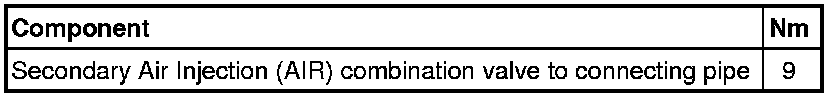

Air Injection Control Valve: Service and Repair
Secondary Air Injection Combination Valve
Removing
- Disconnect air guide hose - 1 - from AIR combination valve.
- Remove bolts - 2 - and - 3 - and remove AIR combination valve.

• The cylinder bank 1 (right) AIR combination valve is shown in the illustration.
Installing
Installation is performed in reverse order of removal, noting the following:
• Replace seals.
Tightening Specifications
